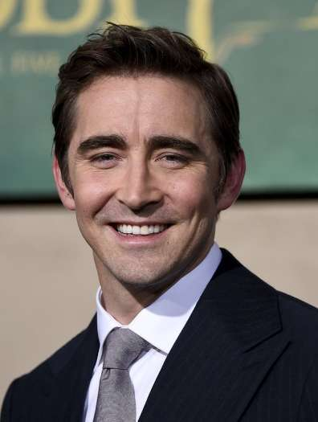
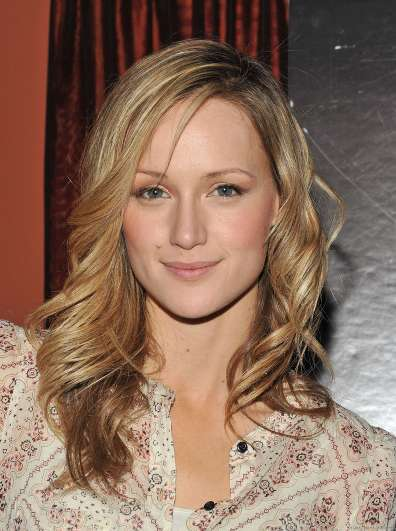

Toby Huss
Interpretó a John Bosworth en Halt and Catch Fire.
Conocido por:
- King of the Hill (Cotton Hill)
- Juego de Criminales (Anthony Lamb)
- Seinfeld (Jack)
STATUS: ONLINE
“El futuro no es algo que esperás. Es algo que construís.”
Interpretó a John Bosworth en Halt and Catch Fire.
Conocido por:
Interpretó a Haley Clark en Halt and Catch Fire.
Conocida por:
Interpretó a Gordon Clark en Halt and Catch Fire.
Conocido por:
Interpretó a Cameron Howe en Halt and Catch Fire.
Conocida por:

Interpretó a Joe MacMillan en Halt and Catch Fire.
Conocido por:

Interpretó a Donna Clark en Halt and Catch Fire.
Conocida por:
Interpretó a Joanie Clark en Halt and Catch Fire.
Conocida por: